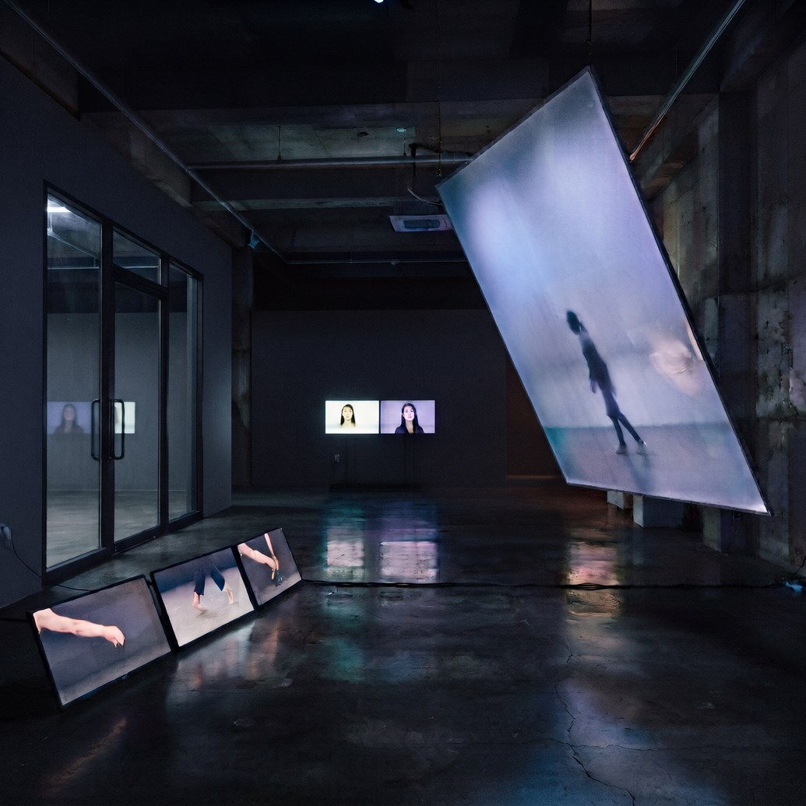

[작가 비평] 이준서 작가론: 화면 너머의 신체성
이수혁 비평가
2026.11.06
이준서의 작업을 처음 마주한 관객은 흔히 당혹감을 느낀다. 전시장에 들어서면 벽면을 가득 메운 영상 대신, 바닥에 눕혀진 모니터와 천장에서 내려오는 빛의 면들이 먼저 눈에 들어온다. 화면은 정면을 향하지 않는다. 그것은 비스듬히 기울어져 있거나, 관객의 발밑에서 올려다보이거나, 두 개의 스크린이 서로를 마주 본 채 침묵한다. 이준서에게 화면은 이미지를 '보여주는' 창이 아니라, 몸이 머무는 하나의 장소다.
지난 십 년간 그의 작업을 관통해 온 질문은 비교적 일관된다. 신체가 사라진 뒤에도 신체성은 남을 수 있는가. 초기작 〈좌표 없는 방〉(2017)에서 그는 무용수의 움직임을 3채널 영상으로 분해한 뒤, 세 개의 화면을 공간의 서로 다른 각도에 설치했다. 관객은 어느 자리에서도 춤의 전체를 볼 수 없다. 정면에서 보이던 팔의 궤적은 측면으로 이동하는 순간 납작한 선으로 붕괴하고, 다시 몸을 틀면 깊이를 회복한다. 춤은 화면 안에 기록되어 있으나, 그 춤을 완성하는 것은 관객의 신체가 공간을 가로지르며 만들어 내는 시점의 이동이다. 이준서의 화면은 언제나 보는 이의 몸을 요구한다.
이 지점에서 그의 작업은 미디어아트의 오래된 딜레마—매체의 비물질성과 신체의 소거—를 정면으로 되묻는다. 디지털 이미지는 무한히 복제되고 어디서든 재생되지만, 바로 그 때문에 특정한 장소와 몸을 잃는다. 이준서는 이 상실을 역설적으로 복원한다. 그는 이미지를 공간에 '설치'함으로써, 화면이 놓인 각도와 높이, 관객이 서야 하는 자리, 올려다보거나 숙여야 하는 목의 각도까지를 작품의 일부로 끌어들인다. 화면 너머의 신체성이란, 영상 속 인물의 몸이 아니라 그 앞에 선 관객의 몸으로 옮겨진 신체성이다.
근작 〈After Image〉(2023)는 이러한 전환을 가장 밀도 있게 보여 준다. 어두운 전시장 한가운데, 쪽빛으로 발광하는 사각의 면이 공간을 가로지른다. 관객이 가까이 다가가면 화면은 커지고, 물러서면 작아지며, 비켜서면 사다리꼴로 일그러진다. 영상의 내용—한 사람이 천천히 걷다 멈추는 짧은 장면—은 거의 중요하지 않다. 중요한 것은 그 장면이 관객의 위치에 따라 끊임없이 형태를 바꾼다는 사실이다. 작가는 이를 두고 "작품은 고정된 상(像)이 아니라, 보는 사람마다 다르게 접히는 사건"이라고 말한다. 여기서 '화면 너머'는 공간적 은유인 동시에 시간적 은유가 된다. 지금 이 자리의 내가 보는 상은, 다음 세대의 누군가가 다른 자리에서 볼 상과 결코 같지 않다.
이준서의 작업이 단순한 지각 실험에 머물지 않는 이유가 여기에 있다. 그는 매체의 수명과 보존이라는 문제를 작업의 내부로 끌어들인다. 뉴미디어 작품은 재생 장비가 단종되고 포맷이 낡으면 사라진다. 그러나 이준서는 소멸을 두려워하는 대신, 작품이 매번 다르게 재현될 수밖에 없다는 조건을 오히려 미학의 중심에 놓는다. 그의 화면은 원본을 고집하지 않는다. 그것은 설치될 때마다, 관객을 맞이할 때마다 새로 태어난다. 보존이란 원형을 박제하는 일이 아니라, 다시 펼쳐질 수 있는 가능성을 남기는 일임을—그의 작업은 조용히 증언한다.
물론 이러한 태도가 모든 비판으로부터 자유로운 것은 아니다. 관객의 신체와 시점에 작품을 전적으로 맡길 때, 작가의 통제는 어디까지 유효한가. 지각의 다양성을 강조하는 수사가 때로 작품의 내용적 빈약함을 가리는 알리바이로 기능하지는 않는가. 이준서 역시 이 질문 앞에서 완전히 자유롭지 못하다. 몇몇 근작에서 형식의 세련됨이 주제의 절실함을 앞지르는 순간들이 감지되기도 한다.
그럼에도 이준서의 작업은 동시대 미디어아트가 좀처럼 도달하지 못한 자리를 가리킨다. 화면을 몸의 문제로, 이미지를 장소의 문제로, 그리고 보존을 전승의 문제로 되돌려 놓는 일. 그의 화면 앞에서 우리는 다시 한번 몸을 움직여야 한다. 그 번거로운 이동이야말로, 사라지는 매체의 시대에 작품이 관객에게 요구할 수 있는 가장 정직한 참여일 것이다.
